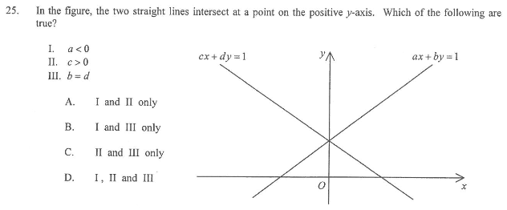

Coordinate Geometry — intercepts of the straight lines \(ax+by=1\) and \(cx+dy=1\)
In the figure, the two straight lines intersect at a point on the positive \(y\)-axis. Which of the following are true?
I. \(a < 0\)
II. \(c > 0\)
III. \(b = d\)
The two lines are \(ax+by=1\) (upper right) and \(cx+dy=1\) (upper left), meeting on the positive \(y\)-axis. Explore the geometry below, then check each statement.

Drag the sliders to change the coefficients. The two lines always meet on the \(y\)-axis at height \(\frac{1}{b}=\frac{1}{d}\).
Find the \(x\)-intercept of \(ax+by=1\) by putting \(y=0\):
\[ ax + b(0) = 1 \;\Longrightarrow\; x = \dfrac{1}{a} \]From the figure, the upper-right line \(ax+by=1\) cuts the negative \(x\)-axis (its \(x\)-intercept lies to the left of \(O\)). Hence
\[ \dfrac{1}{a} < 0 \;\Longrightarrow\; a < 0 \qquad (\text{since } a\neq 0). \]Find the \(x\)-intercept of \(cx+dy=1\) by putting \(y=0\):
\[ cx + d(0) = 1 \;\Longrightarrow\; x = \dfrac{1}{c} \]From the figure, the upper-left line \(cx+dy=1\) cuts the positive \(x\)-axis, i.e. \(1/c>0\):
\[ \dfrac{1}{c} > 0 \;\Longrightarrow\; c > 0 \qquad (\text{since } c\neq 0). \]Both lines pass through the same point \(P\) on the \(y\)-axis. On the \(y\)-axis \(x=0\), so substitute \(x=0\) into each equation:
\[ by = 1 \quad\Longrightarrow\quad y=\tfrac{1}{b}, \qquad dy = 1 \quad\Longrightarrow\quad y=\tfrac{1}{d}. \]Since \(P\) is the same point for both lines, its \(y\)-coordinate must be the same:
\[ \dfrac{1}{b} = \dfrac{1}{d}. \]Taking reciprocals of both sides (valid since \(b,d\neq 0\)):
\[ b = d. \]Geometric reading: the common point \(P\) is on the positive \(y\)-axis, so
\[ \dfrac{1}{b}=\dfrac{1}{d} > 0 \;\Longrightarrow\; b = d > 0 . \]